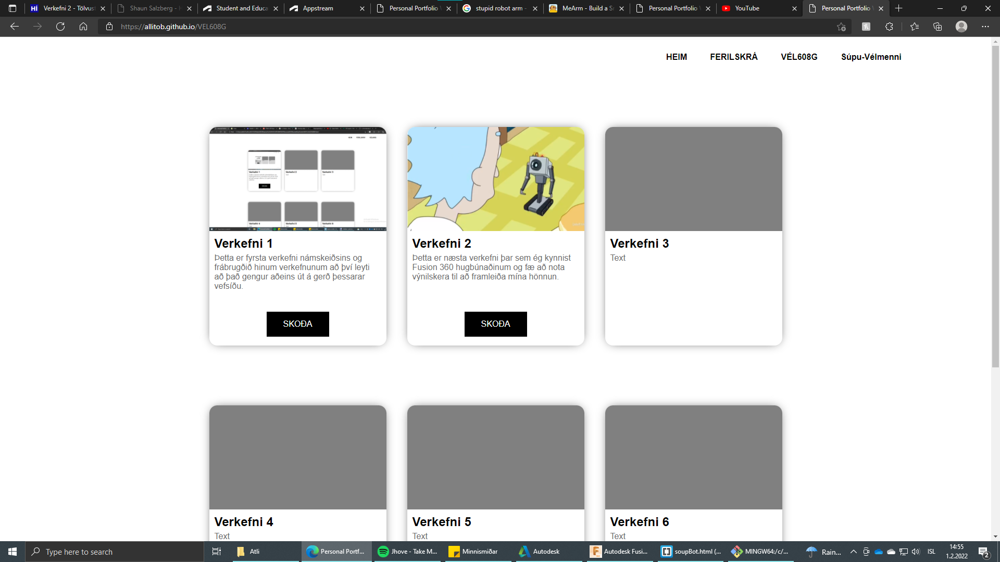
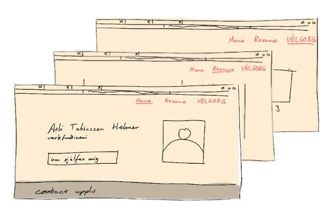
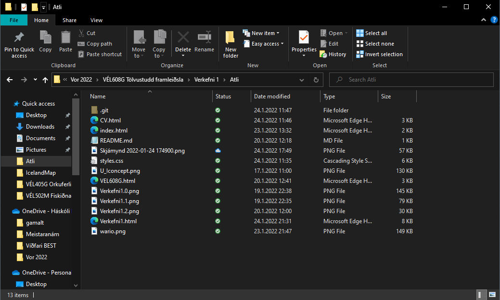
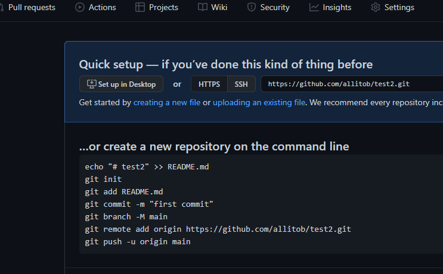
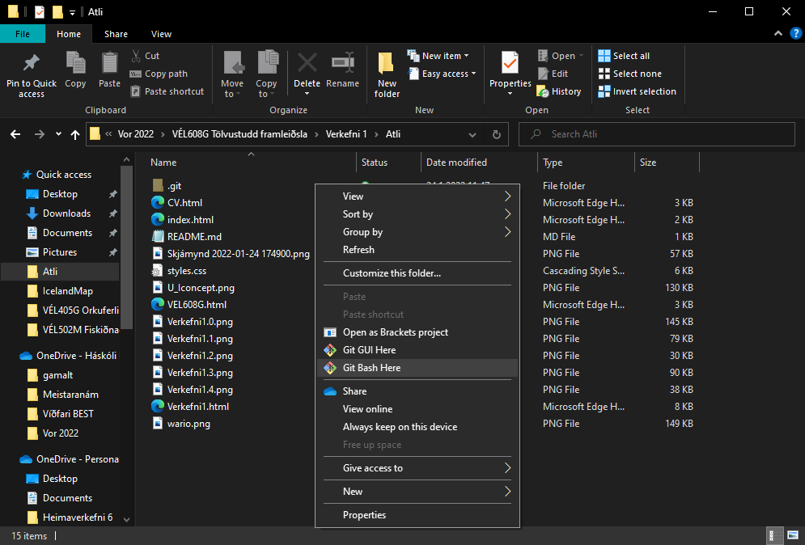

Fyrsta verkefnið í þessum áfanga gekk út á að undirbúa skjalasafn á vefsíðuformi. Þetta er hugsað fyrst og fremst fyrir þennan áfanga þar sem umsjónakennari getur farið yfir verkefnin en einnig nýtist þetta vel sem almenn persónuleg síða sem má nýta á ýmsan máta.

Samkvæmt verkefnaseðli átti vefsíðan að innihalda heimasíðu með mynd og einföldum texta um síðuna, ferilskrá sem bæði er hægt að skoða beint og hala niður á 'pdf'-formi. Aðaltilgangurinn er þó skjalasafn fyrir verkefni þessa áfanga. Þriðji og síðasti flipi síðunnar heitir 'VÉL608G' sem er jafnframt skammstöfun á nafni áfangans. Verkefnin eru geymd hér sem samfelldur texti og hann veitir lesenda fullnægjandi upplýsingar til að endurgera þau sjálfur. Fyrsta áskorunin við gerð þessarar vefsíðu var að ákveða hvernig útlit hennar ætti að vera. Hægt var að velja tilbúin sniðmát á vefsíðum eins og html5up.net (ábending umsjónakennara) en einnig mátti smíða vefsíðuna sjálfur frá grunni en síðarnefnda aðferðin reynist snúnari. Til allrar hamingju ég ágætis reynslu að vinna með hugbúnað í tengslum við vefsíðugerð (HTML og CSS) og treysti sér því til þess að gera síðuna sína frá grunni. Fyrstu skrefin voru gerð á pappír. Ég teiknaði fyrstu þrjár meginsíðurnar eins og mér fannst koma best út og útfrá þessum teikningum gerði ég síðuna. Þetta útlit kallast viðmót (notendaviðmót) og ef það eru vel gert auðveldar það notanda að skoða síðuna.

Vefsíðan er mun einfaldari í útliti heldur en þær vefsíður sem eru með tilbúin sniðmát. Þrátt fyrir reynsluleysi mitt taldi ég einfalt útlit passar betur við boðskap vefsíðunnar. Það er ekki samasem merki á milli hversu flott síða er og hvert raunverulegt notagildið er. Ég byrjaði að leita að 'how to make portfolio website' og fann eftirfarandi myndband. Forritunarkóðinn var skrifaður með Brackets.
Ef notandi hægrismellir einhversstaðar á síðuna og velur 'skoða' (inspect) þá birtist flipi sem sýnir kóða vefsíðunnar bæði fyrir HTML og CSS. Hann er ansi svipaður og það sem kemur fram í myndbandinu. Þessi forritunarmál eru með þeim einföldustu og er frábært fyrir byrjendur í hugbúnaðargeiranum að læra á þau. Að mínu mati er flóknasti hlutinn við html að setja upp vefsíðuna. Allt annað lærist einfaldlega með því að prófa sig áfram. Internetið hjálpar manni að finna dæmi um hvernig hægt er að ná ákveðnu útliti fram og út frá því er hægt að sníða vefsíðu eftir eigin höfði. Þegar heimasíðan var tilbúin gerði ég síðufótin. Ég fylgdi nokkrum skrefum úr eftirfarandi myndbandi:
Þessi síðufótur var síðan fínstilltur fyrir alla flipa vefsíðunnar. Skemmtilegasti hluti verkefnisins var klárlega að gera spjöldin sem sjá má á síðu áfangans, VÉL608G.
Vandamálið við spjöldin úr myndbandinu hér að ofan er að þau fá svartan bakgrunn. Hins vegar er bakgrunnurinn á þessari vefsíðu hvítur og þar sem spjöldin eru sjálf hvít þarf einhvers konar ramma til að sýna notanda að spjöldin séu aðskilin frá bakgrunninum. Þetta var einfaldlega leyst með því að setja skugga á bakvið spjöldin. Í myndbandinu hér að neðan má fræðast um það hvernig skuggar virka í CSS:
Forsíðumyndin fékk einnig svipaðan skugga.Loks var ferilskráin gerð. Aðferðin var mjög lík þeirri sem er l+yst í þessu myndbandi að ofan. Þ.e. skilgreina element sem hafa innihald hvers flokks ferilskránnar og síðan nota 'flex-wrap' skipunina í CSS til að ná röðuninni.Þegar allt það helsta var komið saman þurfti bara að fínpússa restina. Mikið af villum var að finna og þurfti höfundur oft að leita hjálpar á netinu, einkum á síðunum Stackoverflow og W3schools. Stackoverflow er síða þar sem fólk spyr og svarar spurningum sérstaklega um forritunarkóða. Síðurnar sem höfundur notaði frá Stackoverflow eru taldar upp:
Og þær frá W3schools:
Þegar öllu var lokið þurfti að setja síðuna á netið svo hver sem er gæti aðgengist hana. Hægt var að gera það ókeypis í gegnum Github. Þetta er gert í nokkrum skrefum;
Fyrst þurfti að ganga frá öllum skjölum sem tengjast vefsíðuna í eina möppu. Þessi mappa er síðan send á Github með forritinu 'Git Bash'(aðgengilegt á git-scm.com).

Þegar mappan var orðin fín og snyrtilegt var hægt að skrá sig inn á Github og velja 'New' hjá 'Repositories'(geymslur). Þar var nafn vefsíðunnar valið. Höfundur komst að því að ef hann skrifar 'nafn'.github.io í þá línu verður slóð vefsíðunnar einfaldlega 'nafn'.github.io sem er mun einfaldara en þegar geymslan fær hefðbundið nafn. Höfundur skýrði síðuna því 'allitob.github.io'.Þá birtist auð geymsla sem mátti hlaða inn skrám. Þegar geymslan var tóm voru leiðbeiningar um hvernig ætti að nota 'Git Bash':

Á þessu stigi þurfti að hægri-smella í möppuna sem innihélt öll skjölin og velja 'Git Bash Here':

Síðan þurfti að afrita textann í geymslunni á Github og líma hann inn í stjórnborðið. Um leið keyrðist skipunin og þegar geymslan á github var endurnýjuð mátti sjá að öll skjölin voru komin þangað inn.
Síðasta skrefið var að gera síðuna aðgengilega fyrir hvern sem er. Til þess þarf að fara í 'settings' flipann og velja 'Pages'. Þar er 'branch' valið undir 'source' frá 'none' í 'main'. Þegar þessi stilling var vistuð kom upp hlekkur. Þetta var hlekkurinn að tilbúnu vefsíðunni.PS. Enn var hægt að gera breytingar á þessari síðu og var það fremur einfalt. Allt sem þurfti að gera var að opna aftur 'Git Bash Here' og líma skipunina: 'git add . ; git commit -m"BreytingNr"; git push'.